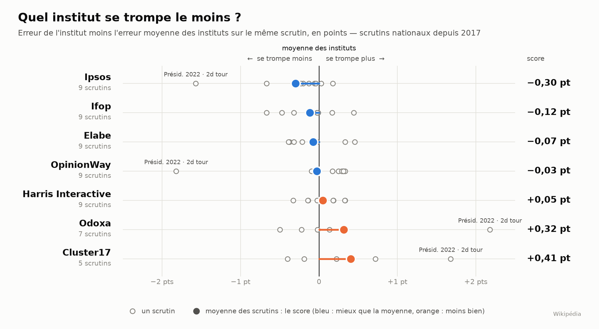

Les instituts face aux urnes
Ifop, Ipsos, OpinionWay, Harris Interactive, Elabe, Odoxa et Cluster17 : à chaque scrutin national depuis 2017, leur dernier sondage confronté au résultat.
La méthode
-
Le sondage retenu
Le dernier publié par chaque institut, s'il a été réalisé dans les deux semaines précédant le vote. Pas de moyenne avec les précédents : quand l'opinion bouge en fin de campagne, elle pénaliserait ceux qui publient souvent.
-
L'erreur
L'écart entre sondage et résultat pour chaque candidat ou liste au-dessus de 1 %, puis leur moyenne quadratique : rater un candidat de 4 points pèse plus que rater quatre candidats d'un point. Sur un même scrutin, tous les instituts sont jugés sur les mêmes candidats.
-
Le score
Certains scrutins sont plus durs à prévoir, et aucun institut ne les a tous couverts. Sur chaque scrutin, l'erreur de l'institut est donc comparée à l'erreur moyenne des instituts présents ; le score est la moyenne de ces écarts.

Chaque petit cercle est un scrutin, le gros point leur moyenne. Plus les cercles sont dispersés, moins le score est solide : un seul scrutin manqué peut suffire à faire passer un institut d'un côté à l'autre de la moyenne.

Dans chaque case, l'erreur en points ; sa couleur la compare à celle des autres instituts sur le même scrutin. La ligne du bas, l'erreur moyenne, est celle que tous partagent : elle pèse souvent plus lourd que ce qui les sépare.
Source : les listes de sondages de Wikipédia et leur ligne « Résultats » (résultats officiels). Le détail des sondages retenus, candidat par candidat : derniers_sondages.csv. Le code : instituts.py.